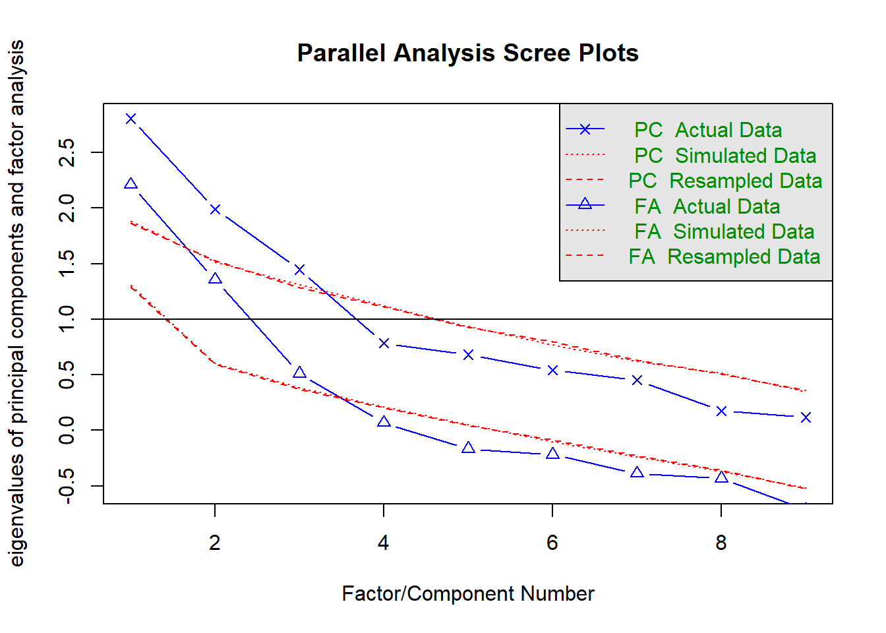

df <- foreign::read.spss("datasets/例22-02.sav",to.data.frame = T,
reencode = "utf-8")
## re-encoding from utf-8
names(df) <- c("年","月","门诊人次","出院人数","病床利用率","病床周转次数",
"平均住院天数","治愈好转率","病死率","诊断符合率","抢救成功率")
str(df)
## 'data.frame': 36 obs. of 11 variables:
## $ 年 : num 1991 1991 1991 1991 1991 ...
## $ 月 : num 1 2 3 4 5 6 7 8 9 10 ...
## $ 门诊人次 : num 4.34 3.45 4.38 4.18 4.32 4.13 4.57 4.31 4.06 4.43 ...
## $ 出院人数 : num 389 271 385 377 378 349 361 209 425 458 ...
## $ 病床利用率 : num 99.1 88.3 104 99.5 102 ...
## $ 病床周转次数: num 1.23 0.85 1.21 1.19 1.19 1.1 1.14 0.52 0.93 0.95 ...
## $ 平均住院天数: num 25.5 23.6 26.5 26.9 27.6 ...
## $ 治愈好转率 : num 93.2 94.3 92.5 93.9 93.2 ...
## $ 病死率 : num 3.56 2.44 4.02 2.92 1.99 4.38 2.73 3.65 3.09 4.21 ...
## $ 诊断符合率 : num 97.5 97.9 98.5 99.4 99.7 ...
## $ 抢救成功率 : num 61.7 73.3 76.8 63.2 80 ...
## - attr(*, "variable.labels")= Named chr [1:11] "" "" "" "" ...
## ..- attr(*, "names")= chr [1:11] "...." ".·." ".....˴." "..Ժ...." ...
psych::headTail(df)
## 年 月 门诊人次 出院人数 病床利用率 病床周转次数 平均住院天数 治愈好转率
## 1 1991 1 4.34 389 99.06 1.23 25.46 93.15
## 2 1991 2 3.45 271 88.28 0.85 23.55 94.31
## 3 1991 3 4.38 385 103.97 1.21 26.54 92.53
## 4 1991 4 4.18 377 99.48 1.19 26.89 93.86
## ... ... ... ... ... ... ... ... ...
## 33 1993 9 3.9 555 80.58 1.1 23.08 94.38
## 34 1993 10 3.62 554 87.21 1.1 22.5 92.43
## 35 1993 11 3.75 586 90.31 1.12 23.73 92.47
## 36 1993 12 3.77 627 86.47 1.24 23.22 91.17
## 病死率 诊断符合率 抢救成功率
## 1 3.56 97.51 61.66
## 2 2.44 97.94 73.33
## 3 4.02 98.48 76.79
## 4 2.92 99.41 63.16
## ... ... ... ...
## 33 2.06 96.82 91.79
## 34 3.22 97.16 87.77
## 35 2.07 97.74 93.89
## 36 3.4 98.98 89.823 R语言因子分析
因子分析可以看做是主成分分析的进一步扩展，主成分分析重点在综合原始变量的信息，而因子分析重在解释原始变量之间的关系。
主成分并没有实际的意义，只是原始变量的线性组合，但是因子有明确的意义，是可以解释的。
因子分析的步骤和主成分也是差不多的，关于因子分析前的一些准备工作可以参考之前主成分分析的步骤，比如相关矩阵的计算，KMO检验和Bartlett球形检验等，这里不再介绍。
只有数据之间的相关性好，才有可能提炼出公共因子，建议大家相关性分析和两个检验不要忘记。
23.1 演示数据
数据来自于孙振球医学统计学第4版例22-2.
某医院为了评价医疗工作质量，收集了三年的门诊人次、出院人数、病床利用率、病床周转次数、平均住院天数、治愈好转率、病死率、诊断符合率、抢救成功率9个指标，采用因子分析方法，探讨其综合评价体系。
23.2 判断需要提取的因子个数
R中自带了factanal()进行因子分析，不过不如psych包好用，我们这里使用psych包演示。
# 只用后面9列数据
df.use <- df[,-c(1,2)]
library(psych)
# 碎石图
fa.parallel(df.use, fa = "both",fm="ml")
## Parallel analysis suggests that the number of factors = 3 and the number of components = 3通过参数fa = "both"同时给出了PCA和因子分析的碎石图，根据因子分析碎石图的结果，建议我们提取3个因子。
但是提取几个因子并没有绝对的标准，我们可以结合多种方法或专业知识，和提取主成分的方法类似，可以参考之前的介绍的方法：R语言主成分分析
除此之外，还可以结合特征值大小、累计贡献率来确定使用几个因子。
下面我们首先用9个因子进行因子分析，看看结果再说。
rotate参数确定旋转方法，有多种不同的选择，比如不旋转、正交旋转法（比如最大方差法）、斜交旋转法等，
fm参数选择因子计算方法，比如最大似然法ml、主轴迭代法pa、加权最小二乘wls、广义加权最小二乘gls、最小残差minres，等。
# 进行因子分析，首先9个因子用一下看看结果再说，最大似然法，不旋转
fa.res <- fa(df.use, nfactors = 9, rotate = "none", fm="ml")
fa.res
## Factor Analysis using method = ml
## Call: fa(r = df.use, nfactors = 9, rotate = "none", fm = "ml")
## Standardized loadings (pattern matrix) based upon correlation matrix
## ML1 ML2 ML3 ML4 ML5 ML6 ML7 ML8 ML9 h2 u2 com
## 门诊人次 0.14 0.68 0.09 0.37 -0.06 -0.03 0 0 0 0.63 0.37 1.7
## 出院人数 0.68 -0.30 0.19 0.32 0.06 0.03 0 0 0 0.69 0.31 2.1
## 病床利用率 0.58 0.52 -0.09 -0.31 0.04 0.05 0 0 0 0.71 0.29 2.6
## 病床周转次数 0.90 0.20 -0.01 -0.01 0.01 -0.01 0 0 0 0.85 0.15 1.1
## 平均住院天数 -0.53 0.43 0.38 0.05 0.02 0.09 0 0 0 0.62 0.38 2.9
## 治愈好转率 -0.03 -0.07 0.69 -0.18 0.13 -0.02 0 0 0 0.53 0.47 1.2
## 病死率 -0.33 0.08 -0.46 0.18 0.24 0.09 0 0 0 0.42 0.58 2.9
## 诊断符合率 -0.31 0.54 0.02 0.02 -0.15 0.07 0 0 0 0.41 0.59 1.8
## 抢救成功率 0.41 -0.64 0.07 -0.03 -0.12 0.10 0 0 0 0.60 0.40 1.9
##
## ML1 ML2 ML3 ML4 ML5 ML6 ML7 ML8 ML9
## SS loadings 2.27 1.75 0.89 0.40 0.12 0.04 0.00 0.00 0.00
## Proportion Var 0.25 0.19 0.10 0.04 0.01 0.00 0.00 0.00 0.00
## Cumulative Var 0.25 0.45 0.55 0.59 0.60 0.61 0.61 0.61 0.61
## Proportion Explained 0.41 0.32 0.16 0.07 0.02 0.01 0.00 0.00 0.00
## Cumulative Proportion 0.41 0.74 0.90 0.97 0.99 1.00 1.00 1.00 1.00
##
## Mean item complexity = 2
## Test of the hypothesis that 9 factors are sufficient.
##
## The degrees of freedom for the null model are 36 and the objective function was 3.82 with Chi Square of 119.03
## The degrees of freedom for the model are -9 and the objective function was 0.46
##
## The root mean square of the residuals (RMSR) is 0.04
## The df corrected root mean square of the residuals is NA
##
## The harmonic number of observations is 36 with the empirical chi square 3.42 with prob < NA
## The total number of observations was 36 with Likelihood Chi Square = 11.69 with prob < NA
##
## Tucker Lewis Index of factoring reliability = 2.377
## Fit based upon off diagonal values = 0.99
## Measures of factor score adequacy
## ML1 ML2 ML3 ML4 ML5
## Correlation of (regression) scores with factors 0.94 0.90 0.79 0.70 0.42
## Multiple R square of scores with factors 0.88 0.80 0.63 0.50 0.18
## Minimum correlation of possible factor scores 0.77 0.61 0.26 -0.01 -0.65
## ML6 ML7 ML8 ML9
## Correlation of (regression) scores with factors 0.26 0 0 0
## Multiple R square of scores with factors 0.07 0 0 0
## Minimum correlation of possible factor scores -0.86 -1 -1 -1h2是公因子方差，表示因子对每个变量的解释度，u2=1-h2，表示不能被因子解释的比例。
看结果中的Cumulative Var，累积方差解释，可以看到在使用3个因子时，累计贡献度是0.55,4个因子是0.59，结合碎石图，我们选择用4个因子。
23.3 进行因子分析
选择4个因子
# 选择4个因子，不旋转，最大似然法
fa.res <- fa(df.use, nfactors = 4, rotate = "none", fm="ml")
fa.res
## Factor Analysis using method = ml
## Call: fa(r = df.use, nfactors = 4, rotate = "none", fm = "ml")
## Standardized loadings (pattern matrix) based upon correlation matrix
## ML3 ML1 ML2 ML4 h2 u2 com
## 门诊人次 0.61 0.78 0.11 -0.01 1.00 0.005 1.9
## 出院人数 -0.40 0.31 0.34 -0.59 0.72 0.276 3.1
## 病床利用率 -0.30 0.56 0.25 0.49 0.71 0.289 2.9
## 病床周转次数 -0.55 0.75 0.35 0.01 1.00 0.005 2.3
## 平均住院天数 0.67 -0.13 0.16 0.26 0.57 0.435 1.5
## 治愈好转率 0.15 -0.39 0.91 0.00 1.00 0.005 1.4
## 病死率 0.14 -0.07 -0.47 0.10 0.26 0.743 1.3
## 诊断符合率 0.45 0.11 -0.10 0.36 0.36 0.642 2.2
## 抢救成功率 -0.56 -0.12 0.05 -0.46 0.55 0.455 2.1
##
## ML3 ML1 ML2 ML4
## SS loadings 1.94 1.79 1.40 1.02
## Proportion Var 0.22 0.20 0.16 0.11
## Cumulative Var 0.22 0.41 0.57 0.68
## Proportion Explained 0.32 0.29 0.23 0.17
## Cumulative Proportion 0.32 0.61 0.83 1.00
##
## Mean item complexity = 2.1
## Test of the hypothesis that 4 factors are sufficient.
##
## The degrees of freedom for the null model are 36 and the objective function was 3.82 with Chi Square of 119.03
## The degrees of freedom for the model are 6 and the objective function was 0.24
##
## The root mean square of the residuals (RMSR) is 0.04
## The df corrected root mean square of the residuals is 0.09
##
## The harmonic number of observations is 36 with the empirical chi square 3.43 with prob < 0.75
## The total number of observations was 36 with Likelihood Chi Square = 6.84 with prob < 0.34
##
## Tucker Lewis Index of factoring reliability = 0.931
## RMSEA index = 0.055 and the 90 % confidence intervals are 0 0.235
## BIC = -14.67
## Fit based upon off diagonal values = 0.99
## Measures of factor score adequacy
## ML3 ML1 ML2 ML4
## Correlation of (regression) scores with factors 1.00 1.00 1.00 0.87
## Multiple R square of scores with factors 0.99 1.00 0.99 0.75
## Minimum correlation of possible factor scores 0.99 0.99 0.99 0.50选择4个因子，最终的累积方差解释是0.68，再看因子载荷矩阵，因子1（ML1）在病床周转、门诊人次、病床利用率等具有较高的载荷，因子2在治愈好转率方面具有很大的载荷，因子3在门诊人次，平均住院天数、抢救成功率具有较高的载荷，因子4在出院人数具有较高的载荷。
从专业角度来看，并没有发现什么规律，好像不能很好的解释专业意义。
所以我们需要进行因子旋转！
23.4 因子旋转
通过因子旋转我们可以更容易找到内在规律，使得结果更加容易结合专业背景进行解释。
# 选择4个因子，最大方差旋转，最大似然法
fa.res <- fa(df.use, nfactors = 4, rotate = "varimax", fm="ml")
fa.res
## Factor Analysis using method = ml
## Call: fa(r = df.use, nfactors = 4, rotate = "varimax", fm = "ml")
## Standardized loadings (pattern matrix) based upon correlation matrix
## ML3 ML1 ML2 ML4 h2 u2 com
## 门诊人次 -0.31 0.23 -0.03 0.92 1.00 0.005 1.4
## 出院人数 0.75 0.16 0.24 0.27 0.72 0.276 1.6
## 病床利用率 -0.10 0.83 0.03 0.07 0.71 0.289 1.0
## 病床周转次数 0.46 0.84 0.09 0.26 1.00 0.005 1.8
## 平均住院天数 -0.64 -0.23 0.24 0.21 0.57 0.435 1.8
## 治愈好转率 -0.09 -0.09 0.98 -0.10 1.00 0.005 1.1
## 病死率 -0.20 -0.18 -0.42 -0.06 0.26 0.743 1.9
## 诊断符合率 -0.56 0.02 -0.10 0.18 0.36 0.642 1.3
## 抢救成功率 0.70 -0.04 0.04 -0.21 0.55 0.455 1.2
##
## ML3 ML1 ML2 ML4
## SS loadings 2.15 1.58 1.29 1.12
## Proportion Var 0.24 0.18 0.14 0.12
## Cumulative Var 0.24 0.41 0.56 0.68
## Proportion Explained 0.35 0.26 0.21 0.18
## Cumulative Proportion 0.35 0.61 0.82 1.00
##
## Mean item complexity = 1.4
## Test of the hypothesis that 4 factors are sufficient.
##
## The degrees of freedom for the null model are 36 and the objective function was 3.82 with Chi Square of 119.03
## The degrees of freedom for the model are 6 and the objective function was 0.24
##
## The root mean square of the residuals (RMSR) is 0.04
## The df corrected root mean square of the residuals is 0.09
##
## The harmonic number of observations is 36 with the empirical chi square 3.43 with prob < 0.75
## The total number of observations was 36 with Likelihood Chi Square = 6.84 with prob < 0.34
##
## Tucker Lewis Index of factoring reliability = 0.931
## RMSEA index = 0.055 and the 90 % confidence intervals are 0 0.235
## BIC = -14.67
## Fit based upon off diagonal values = 0.99
## Measures of factor score adequacy
## ML3 ML1 ML2 ML4
## Correlation of (regression) scores with factors 0.93 0.96 1.00 0.98
## Multiple R square of scores with factors 0.86 0.92 0.99 0.96
## Minimum correlation of possible factor scores 0.72 0.85 0.99 0.91此时我们再看因子载荷阵，因子3在门诊人次、出院人数、病床周转、平均住院天数、诊断符合率、抢救成功率等多个指标上具有较大的载荷，因子2在治愈好转率、病死率上载荷最大，因子1在病床利用率、病床周转率这两个指标上载荷最高，因子4在门诊人次、出院人数这两个指标的载荷最大。
因此可以认为因子3反映了反映了医疗工作质量各个方面的情况，称为综合因子；因子1反应病床利用情况，可以成为病床利用因子；因子2反映了医疗水平，称为水平因子；因子4反应了就诊患者数量，称为数量因子。
可以把结果可视化：
fa.diagram(fa.res)
factor.plot(fa.res)
关于因子分析，我并没有找到好用的可视化R包，如果大家知道，欢迎评论区留言。